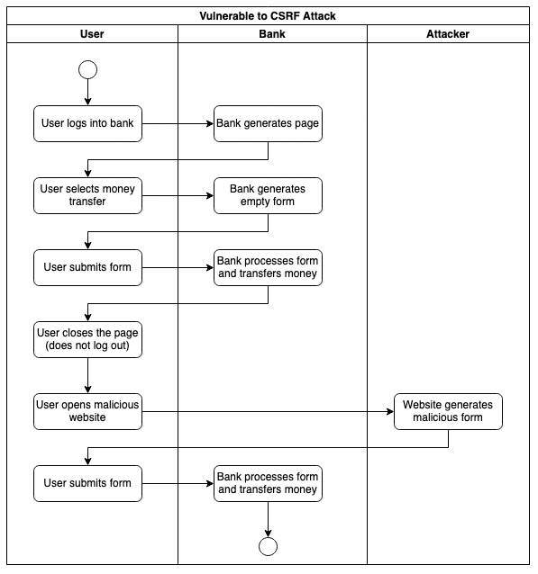

Initial Post by Alberto Rossotto
Cross Site Request Forgery (CSRF)
A Cross-Site Forgery Attack forces the user to submit data to another website's secure area where he has an active session. The user visits a malicious website and clicks on a link or a button. This action sends an HTTP action directed to another website to trigger an event on behalf of the user. Depending on the design of the targetted website, the HTTP action can be a form, a simple HTTP GET, or a REST call.
Mitigating this kind of attack is usually quite simple. The server must generate a unique token that the client must include in the subsequent request. The server must generate a new token at every exchange. This practice ensures that every client submission corresponds to an initial interaction initiated by the client.
The same-origin policy active in all modern browsers protects the user from this attack when using REST APIs (unless the server explicitly disables it with the CORS header). HTTP GET should never change the server's state and be a possible target. This leaves HTML Forms as the only risk. Many web frameworks can generate safe forms without requiring manual coding. They include the CSRF token as a hidden field and automatically check the token in the submitted data.
REFERENCES
OWASP (N.A.) Cross Site Request Forgery (CSRF). Available from: https://owasp.org/www-community/attacks/csrf [Accessed on 8/03/2022]
REPLY - Bernhard van Renssen
Hi Alberto Would it not be possible to inspect the form through the browser's developer tools, and manually remove the hidden field of the input box, which would reveal the token to the user? An attacker could thus change this field:
<input type="hidden" id="token" name="token" value="c319927fd5898ac"> to
<input type="" id="token" name="token" value="c319927fd5898ac">
Would this not expose the token to the potential attacker? With the little experience I have in the banking sector, I have heard that you expose as little as possible to the user in the DOM? I get that there are many processes that have to happen simultaneously to actually create a successful cyber attack, but with many uneducated and weary users that might use the system, chances are that there will be people that click on malicious pop-ups during their banking session.
Might be missing something obvious, just though I would ask if this is how banking forms are actually passing tokens to verify a legitimate transaction?
REPLY - Alberto Rossotto
It is possible to expose the hidden fields in the form. The user would see "weird" fields on the page breaking the page layout, but this would not compromise the security (although the form may become invalid).
You made me realize that this could be the base for a scam by phone.
1.The scammer calls the user and convinces him to open the money transfer page.
2. The scammer guides the user through the browser's tools to inspect the DOM and extract the CSRF Token.
3. The user reveals the CSRF Token to the scammer.
4. The scammer convinces the user to open another website with a forged form and click on active content.
5. The form is submitted to the bank abusing the user's open session and is prefilled by the CSRF Token that the scammer got by phone.
Considering how difficult it is to navigate a DOM it seems an unrealistic scenario.